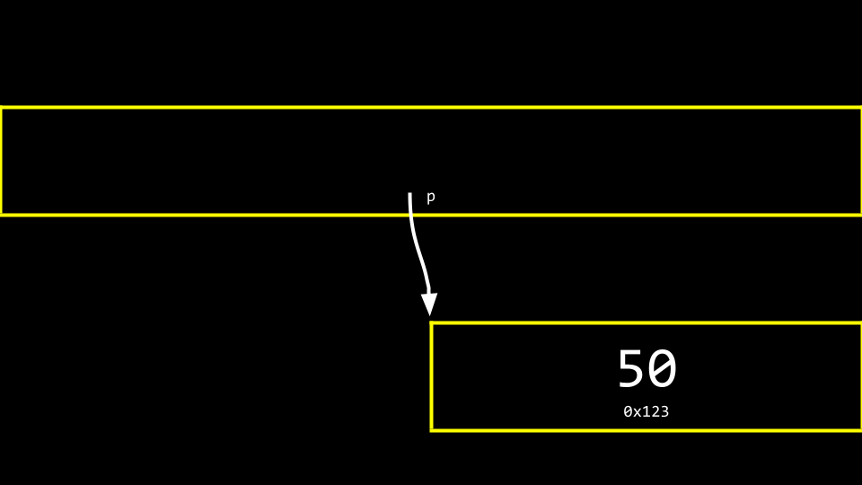
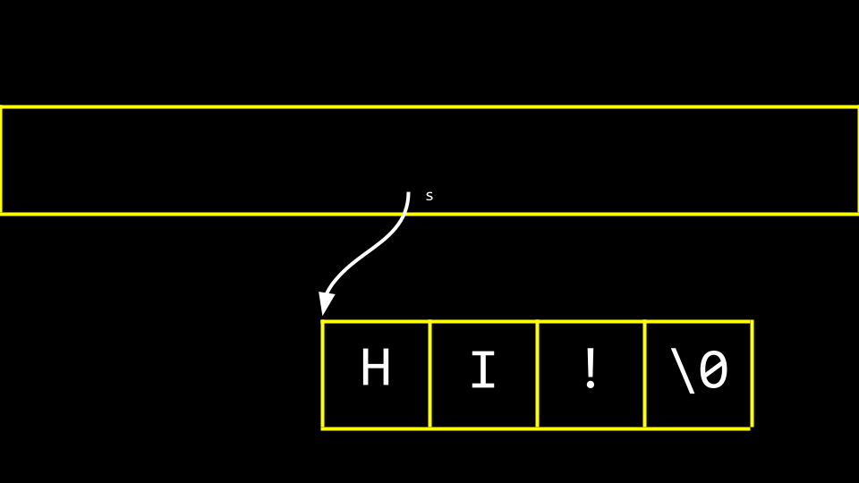
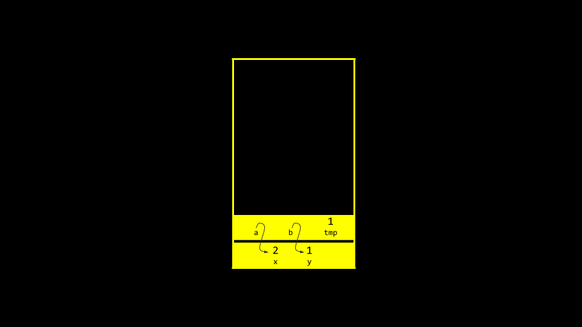

讲座 4
- 欢迎!
- 像素艺术
- 十六进制
- 内存
- 指针
- 字符串
- 指针算术
- 字符串比较
- 复制与 malloc
- Valgrind
- 垃圾值
- 指针趣玩与 Binky
- 交换
- 溢出
scanf- 文件 I/O
- Summing Up
欢迎!
- 今天，我们将卸下许多你在本课程起步时使用的辅助工具。
- 在前几周，我们讨论了图像是由称为像素的更小构建块组成的。
- 本周，我们将进一步详细讨论构成这些图像的 0 和 1。具体来说，我们将更深入地探讨构成文件（包括图像）的基本构建块。
- 此外，我们还将讨论如何访问存储在计算机内存中的底层数据。
- As we begin today, know that the concepts covered in this 讲座 五月 take some 时间 to fully click.
像素艺术
- 像素是排列在上下、左右网格中的彩色方块，即单个点。
-
你可以将图像想象为一张位图，其中 0 代表黑色，1 代表白色。

十六进制
-
RGB，即红、绿、蓝，是表示每种颜色数量的数值。在 Adobe Photoshop 中，你可以看到如下设置：

注意红、蓝、绿的数量如何改变所选颜色。
- 从上图可以看出，颜色不仅仅由三个数值表示。在窗口底部，有一个由数字和字符组成的特殊值。
255被表示为FF。为什么会这样呢？ -
十六进制是一种有 16 个计数值的计数系统，如下所示：
0 1 2 3 4 5 6 7 8 9 A B C D E F注意
F代表15。 - 十六进制也被称为基数为 16 的计数系统。
- 用十六进制计数时，每一列都是 16 的幂。
- 数字
0表示为00。 - 数字
1表示为01。 - 数字
9表示为09。 - 数字
10表示为0A。 - 数字
15表示为0F。 - 数字
16表示为10。 - The number
255is represented asFF, because 16 x 15 (orF) is 240. Add 15 更多 to make 255. This is the highest number you can count using a two-digit hexadecimal system. - 十六进制很有用，因为它可以用更少的位数表示。十六进制让我们能够更简洁地表示信息。
内存
-
在过去几周，你可能还记得我们对并发内存块的艺术化描绘。将十六进制编号应用于这些内存块中的每一个，你可以想象如下：

-
你可以想象，关于上面的
10块可能代表内存中的位置还是数值10可能会产生混淆。因此，按照惯例，所有十六进制数通常都带有0x前缀，如下所示：
-
在你的终端窗口中，输入
code addresses.c并编写如下代码：// Prints an integer #include <stdio.h> int main(void) { int n = 50; printf("%i\n", n); }Notice how
nis stored in 内存 with the value50. -
你可以这样可视化该程序如何存储这个值：

指针
-
The C language has two powerful operators that relate to 内存:
& 提供存储在内存中内容的地址。 * 指示编译器访问内存中的某个位置。 -
我们可以利用这个知识，按如下方式修改我们的代码：
// Prints an integer's address #include <stdio.h> int main(void) { int n = 50; printf("%p\n", &n); }Notice the
%p, which allows us to view the address of a 地点 in 内存.&ncan be literally translated as “the address ofn.” Executing this code will return an address of 内存 beginning with0x. 你可以在此处下载此代码。 - A pointer is a variable that stores the address of something. Most succinctly, a pointer is an address in your computer’s 内存.
-
考虑以下代码：
int n = 50; int *p = &n;注意
p是一个指针，它包含了整数n的地址。 -
按如下方式修改你的代码：
// Stores and prints an integer's address #include <stdio.h> int main(void) { int n = 50; int *p = &n; printf("%p\n", p); }注意此代码与我们之前的代码效果相同。我们只是运用了对
&和*运算符的新知识。你可以在此处下载此代码。 -
为了说明
*运算符的用法，请看以下代码：// Stores and prints an integer's address #include <stdio.h> int main(void) { int n = 50; int *p = &n; printf("%p\n", p); }注意
printfline prints the integer’s address.int *pcreates a pointer whose job is to store the 内存 address of an integer. 你可以在此处下载此代码。 -
你可以这样可视化我们的代码：

注意指针看起来相当大。实际上，指针通常以 8 字节值存储。
p存储的是50的地址。 -
你可以更准确地将指针视为一个指向另一个地址的地址：

字符串
- Now that we have a mental model for 指针, we can peel 返回 a level of simplification that was offered earlier in this 课程.
-
Modify your code as follows:
// Prints a string #include <cs50.h> #include <stdio.h> int main(void) { string s = "HI!"; printf("%s\n", s); }注意打印了一个字符串
s。 你可以在此处下载此代码。 -
Recall that a string is simply an array of characters. For 示例,
string s = "HI!"can be represented as follows:
-
However, what is
sreally? Where is thesstored in 内存? As you can imagine,sneeds to be stored somewhere. 你可以可视化s与字符串的关系，如下所示：
Notice how a pointer called
stells the compiler where the first byte of the string exists in 内存. -
Modify your code as follows:
// Prints a string's address as well the addresses of its chars #include <cs50.h> #include <stdio.h> int main(void) { string s = "HI!"; printf("%p\n", s); printf("%p\n", &s[0]); printf("%p\n", &s[1]); printf("%p\n", &s[2]); printf("%p\n", &s[3]); }Notice the above prints the 内存 locations of each character in the string
s. The&symbol is used to show the address of each element of the string. When running this code, notice that elements0,1,2, and3are 下一页 to one another in 内存. 你可以在此处下载此代码。 -
同样，你可以按如下方式修改你的代码：
// Declares a string with CS50 Library #include <cs50.h> #include <stdio.h> int main(void) { string s = "HI!"; printf("%s\n", s); }注意此代码使用
cs50.h库创建了一个字符串。 你可以在此处下载此代码。 -
卸下辅助工具，你可以再次修改你的代码：
// Declares a string without CS50 Library #include <stdio.h> int main(void) { char *s = "HI!"; printf("%s\n", s); }注意
cs50.h已被移除。 A string is implemented as achar *. This code will present the string that starts at the 地点 ofs. This code effectively removes the training wheels of thestringdata type offered bycs50.h. This is raw C code, without the scaffolding of the cs50 library. 你可以在此处下载此代码。 - 你可以想象字符串作为一种数据类型是如何创建的。
- Last 周, we learned how to create your own data type as a struct.
- cs50 库包含一个如下的类型定义：
typedef char *string - 使用 cs50 库时，这个类型定义是一个简化的表示，允许人们使用名为
string的自定义数据类型。
指针算术
- 指针算术是在内存位置上进行数学运算的能力。
-
你可以修改代码来打印出字符串中的每个内存位置，如下所示：
// Prints a string's chars #include <stdio.h> int main(void) { char *s = "HI!"; printf("%c\n", s[0]); printf("%c\n", s[1]); printf("%c\n", s[2]); }注意我们正在打印
s位置处的每个字符。你可以在此处下载此代码。 -
此外，你可以按如下方式修改你的代码：
// Prints a string's chars via pointer arithmetic #include <stdio.h> int main(void) { char *s = "HI!"; printf("%c\n", *s); printf("%c\n", *(s + 1)); printf("%c\n", *(s + 2)); }注意 first character at the 地点 of
sis printed. Then, the character at the 地点s + 1is printed, and so on. 你可以在此处下载此代码。 -
同样，考虑以下代码：
// Prints substrings via pointer arithmetic #include <stdio.h> int main(void) { char *s = "HI!"; printf("%s\n", s); printf("%s\n", s + 1); printf("%s\n", s + 2); }注意此代码打印了从
s开始的各种内存位置中存储的值。你可以在此处下载此代码。
字符串比较
- 一个字符串本质上是一个字符数组，由其第一个字节的位置标识。
-
Earlier in the 课程, we considered the comparison of integers. We could represent this in code by typing
code compare.cinto the terminal window as follows:// Compares two integers #include <cs50.h> #include <stdio.h> int main(void) { // Get two integers int i = get_int("i: "); int j = get_int("j: "); // Compare integers if (i == j) { printf("Same\n"); } else { printf("Different\n"); } }注意此代码从用户处获取两个整数并进行比较。 你可以在此处下载此代码。
- 然而，对于字符串，不能使用
==运算符来比较两个字符串。 - Utilizing the
==operator in an attempt to compare strings will attempt to compare the 内存 locations of the strings instead of the characters therein. Accordingly, we recommended the use ofstrcmp. -
为了说明这一点，按如下方式修改你的代码：
// Compares two strings' addresses #include <cs50.h> #include <stdio.h> int main(void) { // Get two strings char *s = get_string("s: "); char *t = get_string("t: "); // Compare strings' addresses if (s == t) { printf("Same\n"); } else { printf("Different\n"); } }注意在两个字符串中都输入
HI!仍然会输出Different。 你可以在此处下载此代码。 -
为什么这些字符串看起来不同？你可以用下图来理解原因：

- Therefore, the code for
compare.cabove is actually attempting to see if the 内存 addresses are different, not the strings themselves. -
使用
strcmp，我们可以修正代码：// Compares two strings using strcmp #include <cs50.h> #include <stdio.h> #include <string.h> int main(void) { // Get two strings char *s = get_string("s: "); char *t = get_string("t: "); // Compare strings if (strcmp(s, t) == 0) { printf("Same\n"); } else { printf("Different\n"); } }注意如果字符串相同，
strcmp会返回0。 你可以在此处下载此代码。 -
为了进一步说明这两个字符串如何存在于两个不同的位置，按如下方式修改你的代码：
// Prints two strings #include <cs50.h> #include <stdio.h> int main(void) { // Get two strings char *s = get_string("s: "); char *t = get_string("t: "); // Print strings printf("%s\n", s); printf("%s\n", t); }注意我们现在存储了两个独立的字符串，很可能在两个不同的位置。 你可以在此处下载此代码。
-
稍作修改，你就可以看到这两个存储字符串的位置：
// Prints two strings' addresses #include <cs50.h> #include <stdio.h> int main(void) { // Get two strings char *s = get_string("s: "); char *t = get_string("t: "); // Print strings' addresses printf("%p\n", s); printf("%p\n", t); }注意在打印语句中
%s已改为%p。 你可以在此处下载此代码。
复制与 malloc
- 编程中的一个常见需求是将一个字符串复制到另一个字符串。
-
在你的终端窗口中，输入
code copy.c并编写如下代码：// Capitalizes a string #include <cs50.h> #include <ctype.h> #include <stdio.h> #include <string.h> int main(void) { // Get a string string s = get_string("s: "); // Copy string's address string t = s; // Capitalize first letter in string t[0] = toupper(t[0]); // Print string twice printf("s: %s\n", s); printf("t: %s\n", t); }注意
string t = s将stot. This does not accomplish what we are desiring. The string is not copied – only the address is. Further, notice the inclusion ofctype.h. 你可以在此处下载此代码。 -
你可以这样可视化上述代码：

注意
s和t仍然指向相同的内存块。这不是真正的字符串复制。相反，这是两个指向同一字符串的指针。 -
在我们解决这个挑战之前，确保我们的代码不会经历段错误非常重要，段错误是指我们试图将
string s复制到string t，但string t并不存在。我们可以使用strlen函数来帮助解决这个问题，如下所示：// Capitalizes a string, checking length first #include <cs50.h> #include <ctype.h> #include <stdio.h> #include <string.h> int main(void) { // Get a string string s = get_string("s: "); // Copy string's address string t = s; // Capitalize first letter in string if (strlen(t) > 0) { t[0] = toupper(t[0]); } // Print string twice printf("s: %s\n", s); printf("t: %s\n", t); }注意
strlen用于确保string t有内容。如果没有，则不会复制任何内容。 你可以在此处下载此代码。 -
To be able to make an authentic copy of the string, we will need to introduce two new building blocks. First,
mallocallows you, the programmer, to allocate a block of a specific size of 内存. Second,freeallows you to tell the compiler to free up that block of 内存 you previously allocated. -
我们可以修改代码来创建字符串的真正副本，如下所示：
// Capitalizes a copy of a string #include <cs50.h> #include <ctype.h> #include <stdio.h> #include <stdlib.h> #include <string.h> int main(void) { // Get a string char *s = get_string("s: "); // Allocate memory for another string char *t = malloc(strlen(s) + 1); // Copy string into memory, including '\0' for (int i = 0; i <= strlen(s); i++) { t[i] = s[i]; } // Capitalize copy t[0] = toupper(t[0]); // Print strings printf("s: %s\n", s); printf("t: %s\n", t); }注意
malloc(strlen(s) + 1)创建了一个长度为字符串s长度加一的内存块。这允许我们在最终复制的字符串中包含空字符\0。然后，for循环遍历字符串s，并将每个值赋给字符串t上的相同位置。你可以在此处下载此代码。 -
事实证明我们的代码效率低下。按如下方式修改你的代码：
// Capitalizes a copy of a string, defining n in loop too #include <cs50.h> #include <ctype.h> #include <stdio.h> #include <stdlib.h> #include <string.h> int main(void) { // Get a string char *s = get_string("s: "); // Allocate memory for another string char *t = malloc(strlen(s) + 1); // Copy string into memory, including '\0' for (int i = 0, n = strlen(s); i <= n; i++) { t[i] = s[i]; } // Capitalize copy t[0] = toupper(t[0]); // Print strings printf("s: %s\n", s); printf("t: %s\n", t); }注意现在
n = strlen(s)被定义在for 循环的左侧。最好不要在for循环的中间条件中调用不必要的函数，因为它会一遍又一遍地运行。将n = strlen(s)移到左侧后，strlen函数只运行一次。 你可以在此处下载此代码。 -
C语言有一个内置的字符串复制函数叫做strcpy。可以如下实现：// Capitalizes a copy of a string using strcpy #include <cs50.h> #include <ctype.h> #include <stdio.h> #include <stdlib.h> #include <string.h> int main(void) { // Get a string char *s = get_string("s: "); // Allocate memory for another string char *t = malloc(strlen(s) + 1); // Copy string into memory strcpy(t, s); // Capitalize copy t[0] = toupper(t[0]); // Print strings printf("s: %s\n", s); printf("t: %s\n", t); }注意
strcpy完成了我们之前for循环所做的相同工作。 你可以在此处下载此代码。 -
Both
get_stringandmallocreturnNULL, a special value in 内存, in the event that something goes wrong. 你可以编写代码来检查此NULL条件，如下所示：// Capitalizes a copy of a string without memory errors #include <cs50.h> #include <ctype.h> #include <stdio.h> #include <stdlib.h> #include <string.h> int main(void) { // Get a string char *s = get_string("s: "); if (s == NULL) { return 1; } // Allocate memory for another string char *t = malloc(strlen(s) + 1); if (t == NULL) { return 1; } // Copy string into memory strcpy(t, s); // Capitalize copy if (strlen(t) > 0) { t[0] = toupper(t[0]); } // Print strings printf("s: %s\n", s); printf("t: %s\n", t); // Free memory free(t); return 0; }注意如果获取的字符串长度为
0or malloc fails,NULLis returned. Further, notice thatfreelets the computer know you are done with this block of 内存 you created viamalloc. 你可以在此处下载此代码。
Valgrind
-
Valgrind is a 工具 that can check to see if there are 内存-related issues with your programs wherein you utilized
malloc. Specifically, it checks to see if youfreeall the 内存 you allocated. -
考虑以下
memory.c的代码：// Demonstrates memory errors via valgrind #include <stdio.h> #include <stdlib.h> int main(void) { int *x = malloc(3 * sizeof(int)); x[1] = 72; x[2] = 73; x[3] = 33; }注意运行此程序不会引起任何错误。虽然
malloc用于为数组分配足够的内存，但代码未能free已分配的内存。你可以在此处下载此代码。 - If you type
make memoryfollowed byvalgrind ./memory, you will get a report from valgrind that will report where 内存 has been lost as a result of your program. One error that valgrind reveals is that we attempted to assign the value of33atxof3, where we only allocated an array of size3(x[0],x[1], andx[2]). Another error is that we never freedx. -
你可以修改代码以释放
x的内存，如下所示：// Demonstrates memory errors via valgrind #include <stdio.h> #include <stdlib.h> int main(void) { int *x = malloc(3 * sizeof(int)); x[0] = 72; x[1] = 73; x[2] = 33; free(x); }注意 running valgrind again now results in no 内存 leaks or errors
垃圾值
- When you ask the compiler for a block of 内存, there is no guarantee that this 内存 will be empty.
-
It’s very possible that the 内存 you allocated was previously utilized by the computer. Accordingly, you 五月 see junk or garbage values. This is a result of you getting a block of 内存 but not initializing it. For 示例, consider the following code for
garbage.c:#include <stdio.h> #include <stdlib.h> int main(void) { int scores[1024]; for (int i = 0; i < 1024; i++) { printf("%i\n", scores[i]); } }注意运行此代码会分配
1024locations in 内存 for your array, but theforloop will likely show that not all values therein are0. It’s always best practice to be aware of the potential for garbage values when you do not initialize blocks of 内存 to some other value like zero or otherwise. 你可以在此处下载此代码。
指针趣玩与 Binky
- We watched a 视频 from Stanford University that helped us visualize and understand 指针.
交换
-
In the real 世界, a common need in 编程 is to swap two values. Naturally, it’s hard to swap two variables without a temporary holding space. In practice, you can type
code swap.cand write code as follows to see this in action:// Fails to swap two integers #include <stdio.h> void swap(int a, int b); int main(void) { int x = 1; int y = 2; printf("x is %i, y is %i\n", x, y); swap(x, y); printf("x is %i, y is %i\n", x, y); } void swap(int a, int b) { int tmp = a; a = b; b = tmp; }注意虽然这段代码运行了，但它并没有生效。即使在值被发送到
swap函数后，它们也没有被交换。为什么？ 你可以在此处下载此代码。 - 当你将值传递给函数时，你提供的只是副本。按照当前的代码写法，
x和y的作用域仅限于main函数。也就是说，在main函数的花括号{}中创建的x和y的值只具有main函数的作用域。在我们上面的代码中，x和y是通过传值方式传递的。 -
考虑下图：

注意全局变量（我们在本课程中尚未使用过）存在于内存的一个位置中。各种函数存储在内存另一个区域的
堆栈中。 -
现在，考虑下图：

注意
main和swap有两个独立的帧或内存区域。因此，我们不能简单地将值从一个函数传递到另一个函数来改变它们。 -
Modify your code as follows:
// Swaps two integers using pointers #include <stdio.h> void swap(int *a, int *b); int main(void) { int x = 1; int y = 2; printf("x is %i, y is %i\n", x, y); swap(&x, &y); printf("x is %i, y is %i\n", x, y); } void swap(int *a, int *b) { int tmp = *a; *a = *b; *b = tmp; }注意变量不是通过传值而是通过传引用传递的。也就是说，
x和y的地址被提供给了函数。因此，swap函数可以知道在哪里对 main 函数中的实际x和y进行修改。 你可以在此处下载此代码。 -
你可以这样可视化：

溢出
- A heap overflow is when you overflow the heap, touching areas of 内存 you are not supposed to.
- A stack overflow is when too many functions are called, overflowing the amount of 内存 available.
- 这两种情况都被视为缓冲区溢出。
scanf
- 在 CS50 中，我们创建了像
get_int这样的函数来简化从用户获取输入的操作。 -
scanf是一个可以获取用户输入的内置函数。 -
我们可以使用
scanf相当容易地重新实现get_int，如下所示：// Gets an int from user using scanf #include <stdio.h> int main(void) { int n; printf("n: "); scanf("%i", &n); printf("n: %i\n", n); }注意 value of
nis stored at the 地点 ofnin the linescanf("%i", &n). 你可以在此处下载此代码。 -
然而，尝试重新实现
get_string并不容易。考虑以下代码：// Dangerously gets a string from user using scanf with array #include <stdio.h> int main(void) { char s[4]; printf("s: "); scanf("%s", s); printf("s: %s\n", s); }注意不需要
&，因为在 C 中数组名充当指针。尽管如此，这个程序不会每次运行都正确工作。在这个程序中，我们从未为目标字符串分配足够的内存。事实上，我们不知道用户可能输入多长的字符串！此外，我们不知道内存位置中可能存在什么垃圾值。你可以在此处下载此代码。 -
此外，你的代码可以如下修改。但是，我们必须为字符串预先分配一定数量的内存：
// Using malloc #include <stdio.h> #include <stdlib.h> int main(void) { char *s = malloc(4); if (s == NULL) { return 1; } printf("s: "); scanf("%s", s); printf("s: %s\n", s); free(s); return 0; }注意如果提供了四个字节的字符串，你可能会遇到错误。
-
如下简化我们的代码，我们可以进一步理解预分配这个本质问题：
#include <stdio.h> int main(void) { char s[4]; printf("s: "); scanf("%s", s); printf("s: %s\n", s); }注意如果我们预先分配一个大小为
4的数组，我们可以输入cat，程序可以运行。但是，比这更大的字符串可能会导致错误。 - Sometimes, the compiler or the system running it 五月 allocate 更多 内存 than we indicate. Fundamentally, though, the above code is unsafe. We cannot trust that the user will input a string that fits into our pre-allocated 内存.
文件 I/O
-
你可以读取和操作文件。虽然这个主题将在未来几周进一步讨论，但请考虑以下
phonebook.c的代码：// Saves names and numbers to a CSV file #include <cs50.h> #include <stdio.h> #include <string.h> int main(void) { // Open CSV file FILE *file = fopen("phonebook.csv", "a"); // Get name and number char *name = get_string("Name: "); char *number = get_string("Number: "); // Print to file fprintf(file, "%s,%s\n", name, number); // Close file fclose(file); }注意此代码使用指针来访问文件。你可以在此处下载此代码。
- 你可以在运行上述代码之前创建一个名为
phonebook.csv的文件 or 下载 phonebook.csv. After running the above program and inputting a 姓名 and phone number, you will notice that this data persists in your CSV file. -
如果我们想确保
phonebook.csv在运行程序之前存在，我们可以如下修改代码：// Saves names and numbers to a CSV file, checking for NULL #include <cs50.h> #include <stdio.h> #include <string.h> int main(void) { // Open CSV file FILE *file = fopen("phonebook.csv", "a"); if (file == NULL) { return 1; } // Get name and number char *name = get_string("Name: "); char *number = get_string("Number: "); // Print to file fprintf(file, "%s,%s\n", name, number); // Close file fclose(file); }注意此程序通过调用
return 1来防止NULL指针。 你可以在此处下载此代码。 -
我们可以通过输入
code cp.c并编写如下代码来实现我们自己的复制程序：// Copies a file #include <stdio.h> typedef unsigned char BYTE; int main(int argc, char *argv[]) { FILE *src = fopen(argv[1], "rb"); FILE *dst = fopen(argv[2], "wb"); BYTE b; while (fread(&b, sizeof(b), 1, src) != 0) { fwrite(&b, sizeof(b), 1, dst); } fclose(dst); fclose(src); }注意此文件创建了我们自己的数据类型 BYTE，它等同于 uint8_t 的大小。然后，该文件读取一个
BYTE并将其写入文件。 你可以在此处下载此代码。 - BMPs are also assortments of data that we can examine and manipulate. This 周, you will be doing just that in your 问题集!
总结
In this lesson, you learned 关于 指针 that provide you with the ability to access and manipulate data at specific 内存 locations. Specifically, we delved into…
- 像素艺术
- 十六进制
- 内存
- 指针
- 字符串
- 指针算术
- 字符串比较
- 复制
- malloc 与 Valgrind
- 垃圾值
- 交换
- 溢出
scanf- 文件 I/O
See you 下一页 时间!